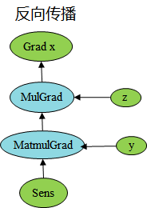
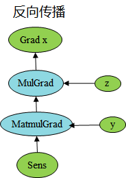
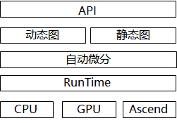

动态图和静态图
Ascend GPU CPU 设计 模型运行

动态图和静态图的概念
目前主流的深度学习框架的执行模式有两种，分别为静态图模式和动态图模式。
静态图模式下，程序在编译执行时将先生成神经网络的图结构，然后再执行图中涉及的计算操作。因此在静态图模式下允许编译器对执行图进行更大程度的优化，从而获得更好的执行性能，而恰恰由于存在着这样的深度优化，使得编译器实际执行和原始代码之间有着更大的差距，导致代码中的错误将更将难以发现以及调试。
动态图模式下，程序按照我们编写的代码顺序进行执行，在执行正向过程中根据反向传播的原理，动态的生成反向执行图，在这种模式下，执行的过程完全按照我们实际编写的代码来执行，因此该模式下更容易进行代码或者网络的调试，并且意味着更加容易将我们大脑中的想法转换成实际的代码。
MindSpore静态图
在MindSpore中静态图模式又被称为Graph模式，可以通过context.set_context(mode=context.GRAPH_MODE)来设置成静态图模式。MindSpore通过源码转换的方式，将Python的源码转换成IR，再在此基础上进行相关的图优化，最终在硬件设备上执行优化后的图。由于静态图模式下，可以针对图进行全局的优化，因此在静态图下能获得较好的性能，但是执行图是从源码转换而来，因此在静态图下不是所有的Python语法都能支持。
MindSpore动态图
在MindSpore中动态图模式又被称为PyNative模式，可以通过context.set_context(mode=context.PYNATIVE_MODE)来设置成动态图模式。
PyNative执行原理
在PyNative模式下，用户可以使用完整的Python API，此外针对使用MindSpore提供的API时，框架会根据用户选择的硬件平台（Ascend，GPU，CPU），将算子API的操作在对应的硬件平台上执行，并返回相应的结果。框架整体的执行过程如下：
通过前端的Python API，调用到框架层，最终到相应的硬件设备上进行计算。例如：完成一个加法
import numpy as np
import mindspore.context as context
import mindspore.nn as nn
from mindspore import Tensor
import mindspore.ops as ops
context.set_context(mode=context.PYNATIVE_MODE, device_target="Ascend")
x = Tensor(np.ones([1, 3, 3, 4]).astype(np.float32))
y = Tensor(np.ones([1, 3, 3, 4]).astype(np.float32))
output = ops.add(x, y)
print(output.asnumpy())
输出：
[[[[2. 2. 2. 2.]
[2. 2. 2. 2.]
[2. 2. 2. 2.]]
[[2. 2. 2. 2.]
[2. 2. 2. 2.]
[2. 2. 2. 2.]]
[[2. 2. 2. 2.]
[2. 2. 2. 2.]
[2. 2. 2. 2.]]]]
此例中，当调用到Python接口ops.add(x, y)时，会将Python的接口调用通过Pybind11调用到框架的C++层，转换成C++的调用，接着框架会根据用户设置的device_target选择对应的硬件设备，在该硬件设备上执行add这个操作。
从上述原理可以看到，在PyNative模式下，Python脚本代码会根据Python的语法进行执行，而执行过程中涉及到MindSpore的API，会根据用户设置在不同的硬件上进行执行，从而进行加速。因此，在PyNative模式下，用户可以随意使用Python的语法以及调试方法。例如可以使用常见的PyCharm、VS Code等IDE进行代码的调试。
PyNative自动微分原理
在前面的介绍中，我们可以看出，在PyNative下执行正向过程完全是按照Python的语法进行执行。在PyNative下是基于Tensor进行实现反向传播的，我们在执行正向过程中，将所有应用于Tensor的操作记录下来，并针对每个操作求取其反向，并将所有反向过程串联起来形成整体反向传播图（简称反向图）。最终，将反向图在设备上进行执行计算出梯度。
反向构图过程示例，如下代码，对矩阵x乘上固定参数z，然后与y进行矩阵乘法，最终对x进行求导。
import numpy as np
import mindspore.nn as nn
import mindspore.ops as ops
from mindspore import Tensor, context
from mindspore import ParameterTuple, Parameter
from mindspore import dtype as mstype
context.set_context(mode=context.PYNATIVE_MODE, device_target="GPU")
class Net(nn.Cell):
def __init__(self):
super(Net, self).__init__()
self.matmul = ops.MatMul()
self.z = Parameter(Tensor(np.array([2.0], np.float32)), name='z')
def construct(self, x, y):
x = x * self.z
out = self.matmul(x, y)
return out
class GradNetWrtX(nn.Cell):
def __init__(self, net):
super(GradNetWrtX, self).__init__()
self.net = net
self.grad_op = ops.GradOperation()
def construct(self, x, y):
gradient_function = self.grad_op(self.net)
return gradient_function(x, y)
x = Tensor([[0.8, 0.6, 0.2], [1.8, 1.3, 1.1]], dtype=mstype.float32)
y = Tensor([[0.11, 3.3, 1.1], [1.1, 0.2, 1.4], [1.1, 2.2, 0.3]], dtype=mstype.float32)
output = GradNetWrtX(Net())(x, y)
print(output)
输出：
[[9.0199995 5.4 7.2000003]
[9.0199995 5.4 7.2000003]]
 

根据上述PyNative下构图原理，我们可以看到，在正向传播过程中，我们记录了Mul的计算过程，根据Mul对应的反向bprop的定义，得到了反向的MulGrad算子，根据Mul算子的bprop定义，如下：
@bprop_getters.register(P.Mul)
def get_bprop_mul(self):
"""Grad definition for `Mul` operation."""
mul_func = P.Mul()
def bprop(x, y, out, dout):
bc_dx = mul_func(y, dout)
bc_dy = mul_func(x, dout)
return binop_grad_common(x, y, bc_dx, bc_dy)
return bprop
可以看到对Mul的输入求反向，需要两个输入和输出的反向传播梯度值，此时根据实际的输入值，可以将z连接到MulGrad。以此类推，对下一个算子Matmul，相应的得到MatmulGrad信息，再根据bprop的输入输出，将上下文梯度传播连接起来。
最终，对于初始传播，在MindSpore中使用sens进行缩放，默认值为1。同理对于输入y求导，可以使用同样的过程进行推导。
PyNative模式下的控制流
在PyNative模式下，脚本按照Python的语法执行，因此在MindSpore中，针对控制流语法并没有做特殊处理，直接按照Python的语法直接展开执行，进而对展开的执行算子进行自动微分的操作。例如，对于for循环，在PyNative下会根据具体的循环次数，不断的执行for循环中的语句，并对其算子进行自动微分的操作。
动静统一
概述
当前在业界支持动态图和静态图两种模式，动态图通过解释执行，具有动态语法亲和性，表达灵活；静态图使用jit编译优化执行，偏静态语法，在语法上有较多限制。动态图和静态图的编译流程不一致，语法约束不一致。MindSpore针对动态图和静态图模式，首先统一API表达，在两种模式下使用相同的API；其次统一动态图和静态图的底层微分机制。

动态图和静态图互相转换
在MindSpore中，我们可以通过控制模式输入参数来切换执行使用动态图还是静态图。例如：
context.set_context(mode=context.PYNATIVE_MODE)
由于在静态图下，对于Python语法有所限制，因此从动态图切换成静态图时，需要符合静态图的语法限制，才能正确使用静态图来进行执行。更多静态图的语法限制可以参考静态图语法限制。
动静结合
MindSpore支持在动态图下使用静态编译的方式来进行混合执行，通过使用ms_function修饰需要用静态图来执行的函数对象，即可实现动态图和静态图的混合执行，更多ms_function的使用可参考ms_function文档。
例如：
import numpy as np
import mindspore as ms
import mindspore.nn as nn
from mindspore import Tensor
from mindspore import ms_function
from mindspore import Parameter
import mindspore.context as context
class AddMulMul(nn.Cell):
def __init__(self):
super(AddMulMul, self).__init__()
self.param = Parameter(Tensor(0.5, ms.float32))
@ms_function
def construct(self, x):
x = x + x
x = x * self.param
x = x * x
return x
class CellCallSingleCell(nn.Cell):
def __init__(self):
super(CellCallSingleCell, self).__init__()
self.conv = nn.Conv2d(1, 2, kernel_size=2, stride=1, padding=0, weight_init="ones", pad_mode="valid")
self.bn = nn.BatchNorm2d(2, momentum=0.99, eps=0.00001, gamma_init="ones")
self.relu = nn.ReLU()
self.add_mul_mul = AddMulMul()
def construct(self, x):
x = self.conv(x)
x = self.bn(x)
x = self.add_mul_mul(x)
x = self.relu(x)
return x
context.set_context(mode=context.PYNATIVE_MODE, device_target="GPU")
inputs = Tensor(np.ones([1, 1, 2, 2]).astype(np.float32))
net = CellCallSingleCell()
out = net(inputs)
print(out)
输出：
[[[[15.999838]]
[[15.999838]]]]